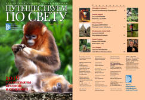
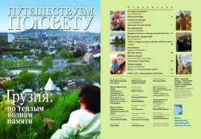
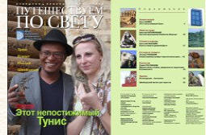
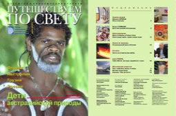
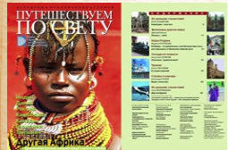
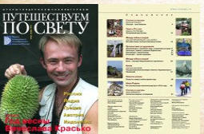
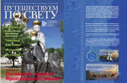
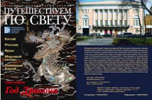

Публикации РОИПА
Белов А.
ЕФРЕМОВ – ПРОРОК, МЕЧТАТЕЛЬ ИЛИ ЕРЕТИК ОТ НАУКИ?
Белов А.
ВНЕЗАПНО ОЖИВШИЕ ГИГАНТЫ
Воронин А.А.
ЖИРОВ – ОСНОВАТЕЛЬ НАУКИ АТЛАНТОЛОГИИ. ЧЕРЕЗ ТЕРНИИ – К АТЛАНТИДЕ
(к 100-летию со дня рождения выдающегося русского атлантолога)
Воронин А.А.
ИСТОРИЯ ВОЗНИКНОВЕНИЯ И РАЗВИТИЯ НОВОГО НАУЧНОГО МЕЖДИСЦИПЛИНАРНОГО НАПРАВЛЕНИЯ – АТЛАНТОЛОГИИ
Воронин А.А.
НАУЧНЫЕ КРИТЕРИИ ПОИСКА АТЛАНТИДЫ. ОБЗОР НЕКОТОРЫХ МАТЕРИАЛОВ
МЕЖДУНАРОДНОЙ КОНФЕРЕНЦИИ «ГИПОТЕЗА ОБ АТЛАНТИДЕ: В ПОИСКАХ ПОТЕРЯННОЙ ЗЕМЛИ» (ГРЕЦИЯ, ОСТРОВ МИЛОС, 2005)
Воронин А.А.
PRINCIPALITY OF ATLANTIS: НЕПРИЗНАННЫЕ «АТЛАНТИЧЕСКИЕ» МИНИ-ГОСУДАРСТВА
Воронин А.А.
БРЮСОВ: ПОСЕВ АТЛАНТИДЫ. НЕКОТОРЫЕ АТЛАНТОЛОГИЧЕСКИЕ КОММЕНТАРИИ
К ЖИЗНИ И ТВОРЧЕСТВУ ПОЭТА
Воронин А.А.
ПОЭТ РУССКОГО ЗАРУБЕЖЬЯ ГЕОРГИЙ ГОЛОХВАСТОВ И ЕГО ПОЭМА "ГИБЕЛЬ АТЛАНТИДЫ"
(1938) В СВЕТЕ ВОЗЗРЕНИЙ АТЛАНТИЧЕСКОЙ ТРАДИЦИИ
Воронин А.А.
ПОХИЩЕНИЕ ВЕЛИКОГО ЗМЕЯ, ИЛИ СОДАЛИЧЕСКАЯ ТАЙНА. ВЫЧИСЛЕНИЯ ЦИКЛОВ МИРОВЫХ КАТАКЛИЗМОВ
Воронин А.А.
МЕТАФИЗИКА И НАУКА В ЖИЗНИ ЕКАТЕРИНЫ ХАГЕМЕЙСТЕР
Архив журнала Национального географического общества «Путешествуем по свету»
2016 Январь-Февраль

2016 Апрель-Май

2014 Февраль-Март

2014 Июнь-Июль

2014 Апрель-Май

2012 Ноябрь-Декабрь

2012 Июнь-Июль

2012 Март
